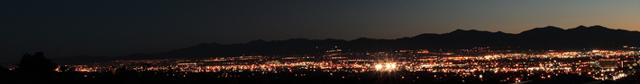
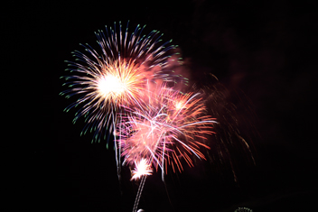
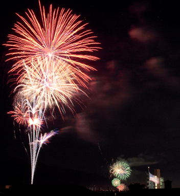
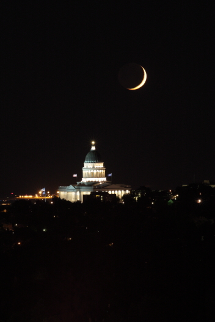
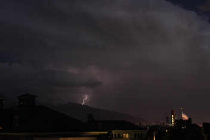
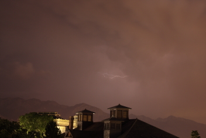
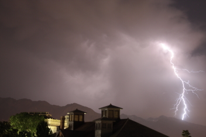
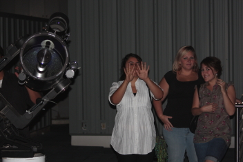
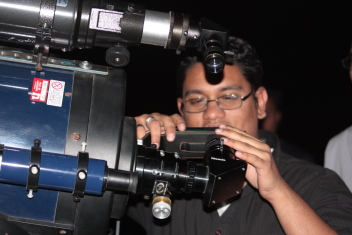
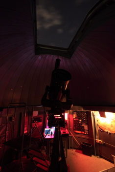

Other Pictures
Here are other pictures taken at the observatory.
 |
 |
| Long Exposure In The Dome
Showing The Clouds That Ended The Night 30 sec exposure, Canon Rebel XTi |
The Dome At The Observatory 6-18-07
Venus, Saturn, and Regulus can be seen. Canon Rebel XTi, 1.3 sec, f/3.5, ISO 200. Click "here" for a hi-res image. |

Wide Angle of the SLC Valley
10 sec exposure, Canon Rebel XTi
Click "here" for larger image.
|  |  |
| July 4th, 2007 Fireworks
Taken from the observatory | July 4th, 2007 Fireworks
Taken from the observatory |
|  |  |
|  |  |
|  |  |
|  |